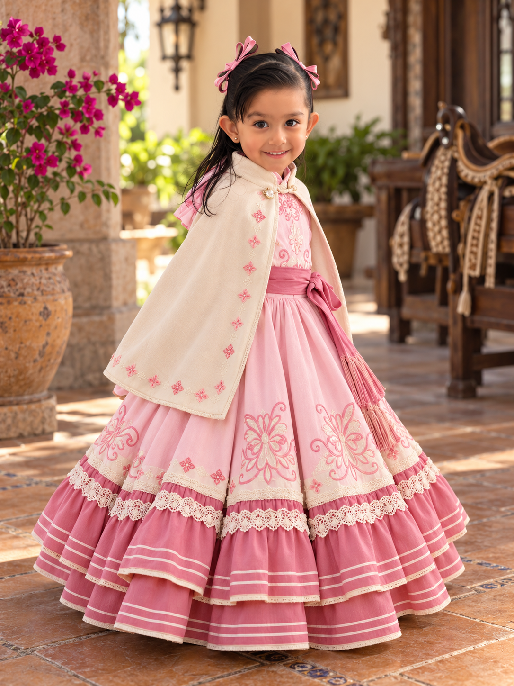

Hotel Sta. LucíaBuena relación
calidad-precioJosé María Morelos 262, Zona Centro,
Celaya
Estacionamiento y ubicación céntrica.
Ver hotel y consultar tarifa ↗
Entre listones, tradición y mucha ilusión, celebraremos un día inolvidable.
Tu compañía hará todavía más bonito el cumpleaños de Mel. Conoce los detalles y prepara tu visita.
Sábado 23 de enero de 2027 · La misa comienza a las 2:30 p. m.
Dos momentos especiales en Celaya. Guarda las ubicaciones para evitar contratiempos.
Queremos que disfrutes la celebración desde que comienzas tu viaje.
Ambas sedes ya están ubicadas. Puedes abrir directamente la dirección de cada una.
Ir a la iglesia ↗ Ir al salón ↗Si vienes de otra ciudad, estas tres opciones de hospedaje en Celaya pueden ayudarte a organizar tu visita. Revisa la ubicación y consulta directamente tarifas y disponibilidad para la fecha de la celebración.
Estacionamiento y ubicación céntrica.
Ver hotel y consultar tarifa ↗Suites con cocineta y estacionamiento.
Ver hotel y consultar tarifa ↗Hospedaje sencillo en el Centro.
Ver hotel y consultar tarifa ↗Los hoteles son sugerencias informativas; la disponibilidad, los precios y los traslados al salón deben verificarse directamente con cada establecimiento.
En la versión publicada habrá un contacto de apoyo para resolver dudas sobre tu llegada a Celaya.
Responde por WhatsApp en unos segundos. Tu mensaje se preparará con el nombre de tu familia y el número de asistentes.
Por confirmar. El atuendo de escaramuza de Mel inspira la identidad del sitio, pero no define el código de vestimenta de los invitados.
Información opcional y contacto de la familia organizadora, pendientes de confirmar.